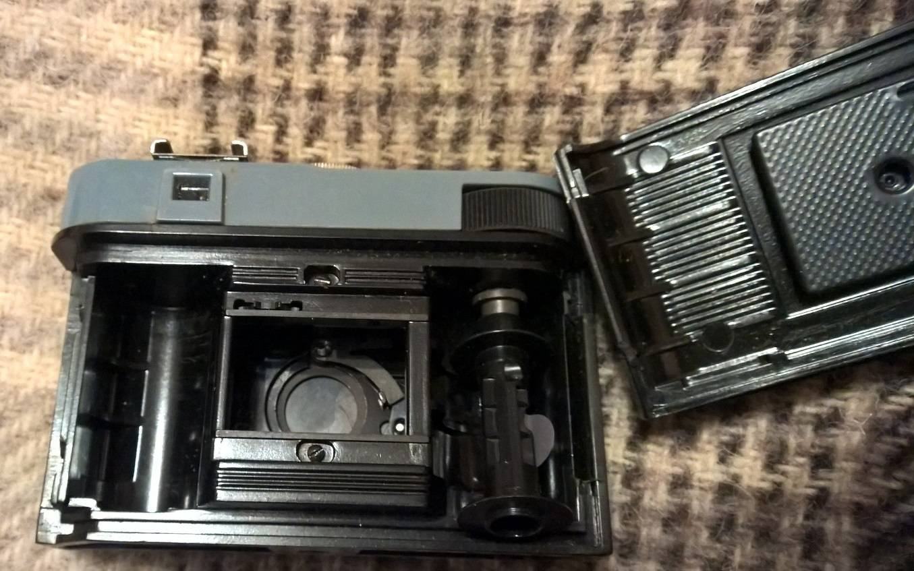

fotoaparatas
About me

Past Articles
- Juostiniai fotoaparatai skelbimai | Plius.lt
Susisiekite su mumis Vilniuje: 8 5 2394130 Kaune: 8 37 711296 Servisas: 8 5 2394118 vilnius@fotofoto.lt Taip pat mus rasite - Fotoaparatas.lt - Foto technikos ir elektronikos ...
Momentinių Fujifilm Wide ir Mini fotoaparatų nuoma bei prekyba jais. Įvairiausi fotosesijų aksesuarai bei priedai momentinėms nuotraukoms. Viskas MomentFoto.lt parduotuvėje. - Skaitmeniniai fotoaparatai | Skaitmeninis fotoaparatas ...
PDF šablonai – nešiojamas kompiuteris, telefonas ir fotoaparatas. Tai tik šablonas, kol prie jo neprisiliečia vaikai ir nenuspalvina jų savo vaizduote! Įsivaizdavimo žaidimai atveria vartus jūsų ir jūsų vaikų improvizacijoms! ĮSIVAIZDUOJU IR ŽAIDŽIU – tai veikla, kuris iš visų žaidimų įtraukia labiausiai! - Skaitmeniniai fotoaparatai | Nedideli ir kompaktiniai ...
Skaitmeninis fotoaparatas su skirtingu priartinimu tiks smulkiems objektams, judantiems žmonėms ar gyvūnams, kvapą gniaužiantiems kraštovaizdžiams fotografuoti. Šie įrenginiai yra nedideli ir itin lengvi, todėl galėsite nešiotis visur su savimi, nepraleisdami nei vienos Jums svarbios akimirkos. - Kokį fotoaparatą pirkti? Naujoko gidas
Fotoaparatas.lt - entuziastų ir patyrusių draugų kompanija, kuri jau nuo 2006 metų padeda savo klientams išsirinkti optimaliausią techninį sprendimą ar prekę. Po daugelio metų savo hobį pavertėme ne tik malonumu, bet ir pragyvenimo šaltiniu. Tuo būdu priartėjome prie kiekvieno iš jūsų arčiau ir mūsų praktika bei patyrimais gali naudotis ne vien tik draugai ar pažįstami ... - PDF ŠABLONAI: kompiuteris, telefonas, fotoaparatas | Idėjų ...
Domina juostiniai fotoaparatai? Juostinių fotoaparatų skelbimai, pasiūlymai, kainos. - EOS DSLR fotoaparatai - Canon Lietuvos
RX100 V aukščiausios klasės kompaktinis fotoaparatas su 1.0 tipo jutikliu, pasižymintis išskirtinėmis AF charakteristikomis. DSC-RX100M5. 0,05 sek. AF greitis ir 24 kadr./sek. nuolatinis fotografavimas; 20,1 MP 1.0 tipo sluoksniuotasis CMOS vaizdo jutiklis su DRAM lustu - Fotoaparatai gera kaina internetu | pigu.lt
Fotoaparatas Olympus OM-D E-M1 Mark II 12-100 F4 Kit+ M.Zuiko F1.2 PRO. Kodas: V207060BE010. 2290 00 ... - Fotoaparatai | Vaizdo kameros | el. parduotuvė RDE.LT
Labiausiai paplitę juostiniai fotoaparatai yra siauro (35mm) formato. Tikriausiai daugelio mūsų tėvai ar seneliai fotografavo tokio formato fotoaparatais (Zenit, Smena, Fed ir kt.). Į tokius fotoaparatus dedasi fotojuostos suvyniotos mažose konteineriuose. Pas mus taip pat rasite ir vidutinio formato (120) juostinių fotoaparatų. - Juostiniai fotoaparatai
Kuo fotoaparatas didesnis ir brangesnis, kuo daugiau jame įtaisyta mygtukų, tuo jį valdyti patogiau. Be to, didesnius fotoaparatus patogiau laikyti. Fotoaparatų tipai. Visi fotoaparatai parodyti proporcinų dydžių ty galima palyginti jų dydžius . Fotoaparatų tipai. Visi fotoaparatai parodyti proporcinų dydžių ty galima palyginti jų ...
Menu
- Juostiniai fotoaparatai skelbimai | Plius.lt
- Fotoaparatas.lt - Foto technikos ir elektronikos ...
- Skaitmeniniai fotoaparatai | Skaitmeninis fotoaparatas ...
- Skaitmeniniai fotoaparatai | Nedideli ir kompaktiniai ...
- Kokį fotoaparatą pirkti? Naujoko gidas
- PDF ŠABLONAI: kompiuteris, telefonas, fotoaparatas | Idėjų ...
- EOS DSLR fotoaparatai - Canon Lietuvos
- Fotoaparatai gera kaina internetu | pigu.lt
- Fotoaparatai | Vaizdo kameros | el. parduotuvė RDE.LT
- Juostiniai fotoaparatai
Juostiniai fotoaparatai

Paskambinkite mums: +37064187787 Kalba: lietuvių kalba English lietuvių kalba English lietuvių kalba Prisijungti shopping_cart Krepšelis (0) Fotoaparatai Juostiniai fotoaparatai Momentiniai fotoaparatai Priedai Juostos 35mm 120 | Vidutinio formato Momentinės 110 Laboratorija Chemija Matavimo indai ir talpos Skanavimui Dirbtuvės Mes ryškinam Pagrindinis Fotoaparatai Juostiniai fotoaparatai Juostiniai fotoaparatai GERAI Filtruoti pagal
Prieinamumas
Prieinamumas
Neturime (7) Yra sandėlyje (8)Prekės ženklas
Prekės ženklas
AgfaPhoto (2) Ilford Photo (1) Lomography (12)Kaina
Kaina
10,00 € - 99,00 €
Juostos dydis
Juostos dydis
35mm (12) 110 (1) 120 | Vid. formato (2)Juostiniai fotoaparatai
Labiausiai paplitę juostiniai fotoaparatai yra siauro (35mm) formato. Tikriausiai daugelio mūsų tėvai ar seneliai fotografavo tokio formato fotoaparatais (Zenit, Smena, Fed ir kt.). Į tokius fotoaparatus dedasi fotojuostos suvyniotos mažose konteineriuose.
Pas mus taip pat rasite ir vidutinio formato (120) juostinių fotoaparatų.
Rasta 15 prekės(-ių).
Rikiuoti pagal: Aktualumas Aktualumas Pavadinimas, A - Z Pavadinimas, Z - A Kaina, mažiausia - didžiausia Kaina, didžiausia - mažiausia Filtras Rodoma 1-12 iš 15 prekės(-ių)Aktyvūs filtrai
Fotoaparatas Paprastutis ...
Kaina 19,90 € Greita peržiūraFotoaparatas La Sardina su...
Kaina 99,00 € IŠPARDUOTA Greita peržiūraFotoaparatas Fisheye No. 2
Kaina 55,00 € Greita peržiūraFotoaparatas Fisheye No.2...
Kaina 59,00 € IŠPARDUOTA Greita peržiūraFotoaparatas Diana F+ su...
Kaina 89,00 € Greita peržiūraFotoaparatas Super Sampler...
Kaina 55,00 € IŠPARDUOTA Greita peržiūraFotoaparatas ActionSampler...
Kaina 29,00 € IŠPARDUOTA Greita peržiūraLa Sardina su blykste...
Kaina 99,00 € Greita peržiūraDiana F+ su blykste (10...
Kaina 89,99 € IŠPARDUOTA Greita peržiūraIlford XP2 Single Use...
Kaina 11,00 € IŠPARDUOTA Greita peržiūraAgfa Photo LeBox Flash 400...
Kaina 10,00 € Greita peržiūraDiana Mini fotoaparatas su...
Kaina 89,00 € Greita peržiūra Rodoma 1-12 iš 15 prekės(-ių) 1 2 Tęsti Atgal į viršų Gaukite mūsų naujienas ir specialius išpardavimus
Facebook InstagramJūsų paskyra
Jūsų paskyra Asmeninė informacija Užsakymai Kredito kvitai Adresai KuponaiApie mus
Apie mus Taisyklės Apie mus Privatumas Prekių grąžinimas Susisiekite su mumisParduotuvės informacija
Kadrų KadrasVilnius
Lietuva
Paskambinkite mums: +37064187787
Parašykite: labas@kadrukadras.lt Parduotuvės informacija
© 2020 - E-komercijos programinė įranga PrestaShop™
Posted by Jack  Read more
Read more  Comments (15)
Comments (15)  2020.10.29 07:00
2020.10.29 07:00